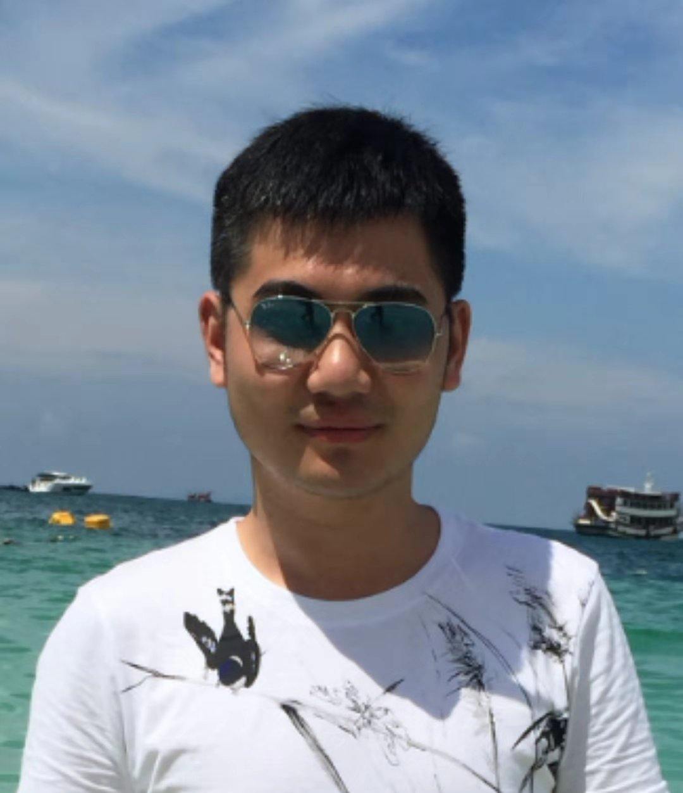

|  | Tengjiao He Lecturer College of Information Science and Technology, Jinan University Guangzhou, China Email: myname@foxmail DOT com., where myname=“tengjiao.he” |
Welcome! This is the personal page of Tengjiao He. I am currently a lecturer at College of Information Science and Technology, Jinan University. I graduated from University of Wollongong, Australia, with Honors. I then obtained my Ph.D. degree under the supervision of A/Prof Kwan-Wu Chin.
Internet of Things (IoTs) – routing, node placement.
Energy harvesting (wireless charging) systems – data transmissions scheduling, and energy allocation.
Network wide resource allocation for 5G networks, MIMO, and NOMA.
Ph.D., Computer Engineering, University of Wollongong, Australia, 2013 - 2017
B.E., Computer Engineering, University of Wollongong, Australia, 2011 - 2013
B.E., Computer Science, Zhengzhou University, China, 2008 - 2011
Lecturer@JNU
大学计算机基础
计算机导论与程序设计实验
程序设计基础
Laboratory Demonstrator@UOW
ECTE482 Network Engineering
ECTE333 Microcontroller Architecture and Applications
ECTE364 Data Communications
Journal Papers
T.J He, K-W Chin and S. Soh. On Wireless Power Transfer and Max Flow in Rechargeable Wireless Sensor Networks, IEEE Access, vol. 4, pp4155-4167, August,2016. [Full Version]
L.Y Wang, K-W Chin, S. Soh and T.J He. A Novel Fair Link Scheduler for Multi Tx/Rx Wireless Mesh Networks, IEEE Access, 5(1), pp10456-10468, May, 2017. [Full Version]
T.J He, K-W Chin and S. Soh. On Maximizing Min Flow Rates Using Auxiliary Energy Units in Rechargeable WSNs, IEEE Transactions on Industrial Informatics, 14(7), pp 2962-2972, July, 2018. [Full Version]
Conference Papers
T.J He, K-W Chin and S. Soh. On Using Wireless Power Transfer to Increase the Max Flow of Rechargeable Wireless Sensor Networks, IEEE 10th International Conference on Intelligent Sensors, Sensor Networks and Information Processing (ISSNIP), Singapore, April, 2015. [Full Version]
X.L Liu, L.X Lin, Z.R Chen, S.C Luo, T.J He and B.R Du. Course Design for Personal Information Security Literature with New-Media Teaching, IEEE 13th International Conference on Computer Science & Education (ICCSE), Colombo, Sri Lanka, Aug, 2018. [Full Version]
T.J He, K-W Chin, S. Soh and C.L Yang. On Optimizing Max Min Rate in Rechargeable Wireless Sensor Networks with Energy Sharing [Minor]
C.L Yang, K-W Chin, T.J He and Y. Liu. A Reinforcement Learning Method for Sampling Maximization in Wireless Powered Internet of Things [Submitted]
Y Liu, K-W Chin, C.L Yang and T.J He. Nodes Deployment for Coverage in Rechargeable Wireless Sensor Networks [Submitted]
C.L Yang, K-W Chin, Y Liu, J.B Zhang and T.J He. Robust Targets Coverage in Energy Harvesting Wireless Sensor Networks [Submitted]